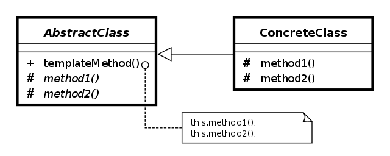
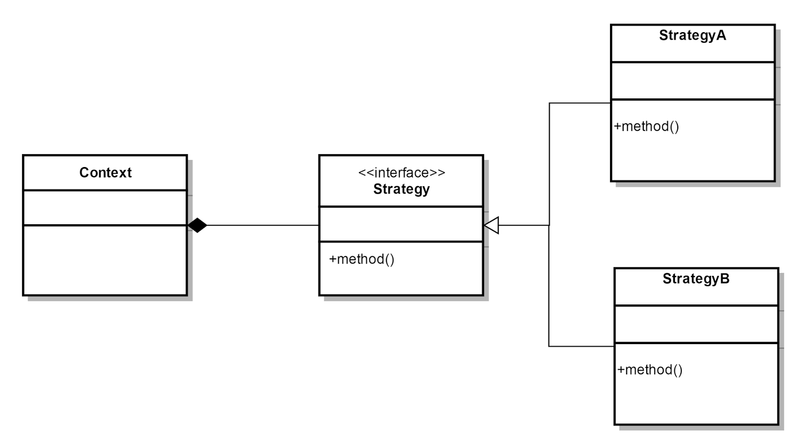
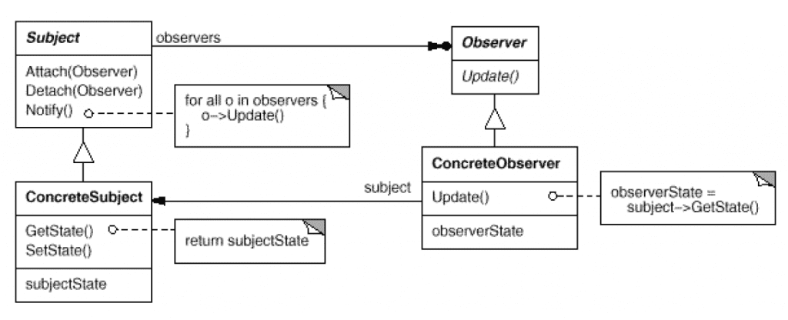

“组件协作类”设计模式（C++）
该类设计模式主要用于解决组件之间的协作问题。
模板模式（Template Method）
在软件构建过程中，对于某一项任务，它常常有稳定的整体操作结构，但各个子步骤却有很多改变的需求。或者由于固有的原因（比如框架与应用之间的关系）而无法和任务的整体结构同时实现。那如何在确定稳定操作的前提下，来灵活应对各个子步骤的变化或晚期实现需求？

模式定义：定义一个操作中的算法的骨架（该骨架必须稳定），而将一些步骤延迟到子类（虚函数）。该模式使得子类可以不改变一个算法的结构，即可重新定义（override）该算法的某些特定步骤。
class FrameWork {
virtual void startUp() {
std::cout << "[Framework] Initializing framework..." << std::endl; // default implementaion.
}
virtual void cleanOut() {
std::cout << "[Framework] Cleaning out the resources, and exit..." << std::endl; // default implementaion.
}
protected:
virtual void core() = 0; // template function, need to be done by client.
public:
virtual ~FrameWork() {}
void run() {
startUp();
core();
cleanOut();
}
};
class Application : public FrameWork {
void core() override {
std::cout << "[User] Application is running..." << std::endl;
}
};
int main(int argc, char **argv) {
FrameWork *f = new Application();
f->run();
delete f;
return 0;
}策略模式（Strategy Method）
在软件构建过程中，某些对象使用的算法可能多种多样，经常改变。而如果将这些算法都编码到对象中，将会使对象变得异常复杂。而且有时候，支持不使用的算法也是一个性能负担。那如何在运行时根据需要透明地更改对象的算法？将算法与对象本身解耦，以避免上述问题？

模式定义：定义一系列算法，把它们一个个封装起来，并且使它们可以互相替换（变化）。该模式使得算法可以独立于使用它的客户程序（稳定）而变化（扩展、子类化）。一般可用于替换复杂重复的 if-else 结构。
struct Strategy {
virtual void strategy() = 0;
virtual ~Strategy() {}
};
class StrategyA : public Strategy {
void strategy() {
std::cout << "[Strategy] StrategyA called..." << std::endl;
}
};
class Application {
Strategy* strategy;
public:
Application() : strategy(new StrategyA()) {} // 可以使用工厂模式进行改进；
~Application() { delete strategy; }
void run() {
std::cout << "[User] Application is running..." << std::endl;
strategy->strategy();
}
};
int main(int argc, char **argv) {
auto app = new Application();
app->run();
delete app;
return 0;
}总结：
- Strategy 及其子类为组件提供了一系列可重用算法，从而可以使得类型在运行时方便地根据需要在各个算法之间进行切换；
- Strategy 模式提供了用条件判断语句以外的另一种选择，消除条件判断语句，就是在解耦合；
- 如果 Strategy 对象没有实例变量，那么各个上下文可以共享同一个 Strategy 对象，从而节省对象开销；
观察者模式（Observer Method）
在软件构建过程中，我们需要为某些对象建立一种“通知依赖关系” —— 一个对象（目标对象）的状态发生改变，所有的依赖对象（观察者对象）都将得到通知。如果这样的依赖关系过于紧密，将使对象不能很好地抵御变化。使用面向对象技术，可以将这种依赖关系弱化，并形成一种稳定的依赖关系，从而实现软件体系结构的松耦合。

模式定义：定义对象间的一种一对多（变化）的依赖关系。以便当一个对象（Subject）的状态发生改变时，所有依赖于它的对象都得到通知并自动更新。
struct Observer {
virtual void update(int value) = 0;
};
class Object { // Subject + Concrete Subject.
int v;
std::list<Observer*> l;
protected:
void notify(int value) { // notification.
for (auto observer : l) {
observer->update(value);
}
}
public:
Object(int v) : v(v) {};
void attach(Observer* observer) { l.push_back(observer); }
void detach(Observer* observer) { l.remove(observer); }
void increase(int num) {
v+= num;
notify(v);
}
};
struct ObserverA : public Observer { // Concrete ObserverA.
void update(int value) {
std::cout << "[ObserverA] notified with value: " << value << std::endl;
}
};
class ObserverB : public Observer { // Concrete ObserverB.
const Object& o;
public:
ObserverB(Object& o) : o(o) { o.attach(this); } // 组合 Object 到 Observer；
void update(int value) {
std::cout << "[ObserverB] notified with value: " << value << std::endl;
}
};
int main(int argc, char **argv) {
Object o(10);
ObserverA observerA{};
ObserverB observerB{o};
o.attach(&observerA); // subscription.
// can simulate a timer here.
std::thread([](auto o) {
for (auto i = 0; i < 10; ++i) {
o->increase(100);
}
}, &o).join();
return 0;
}总结：
- 使用面向对象的抽象，Observer 模式使得我们可以独立地改变目标与观察者，从而使二者之间的依赖关系达到松耦合；
- 目标发送通知时，无需指定观察者，通知会自动传播；
- 观察者自己决定是否需要订阅通知，目标对象对此一无所知；
- Observer 模式是基于事件的 UI 框架中非常常用的设计模式，也是 MVC 模式的一个重要组成部分；